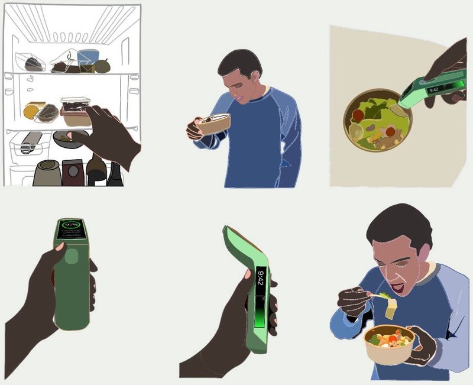
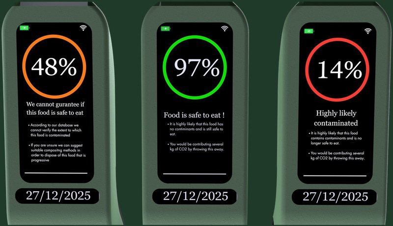
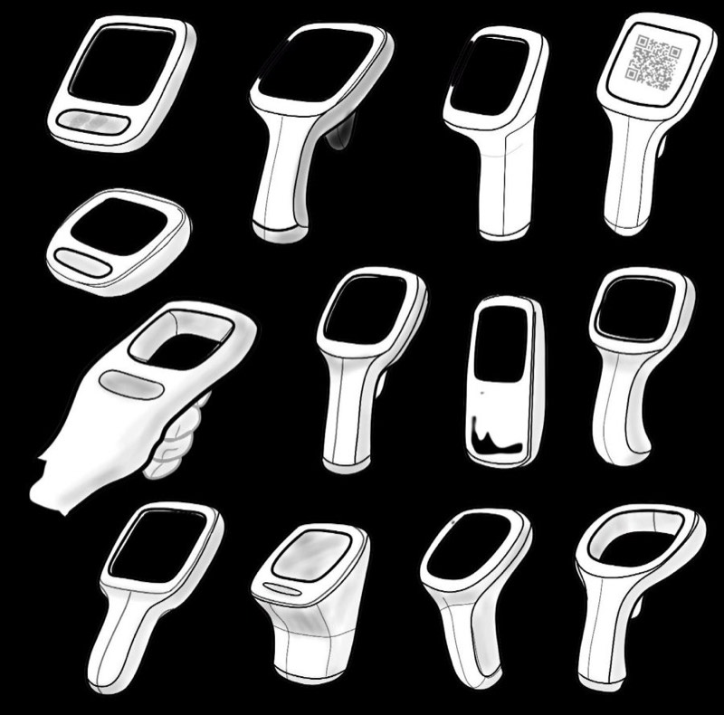
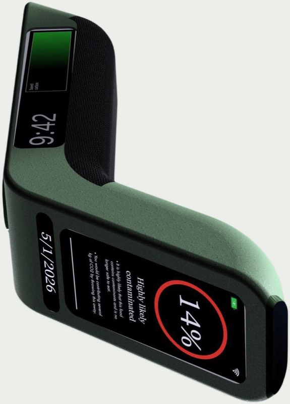
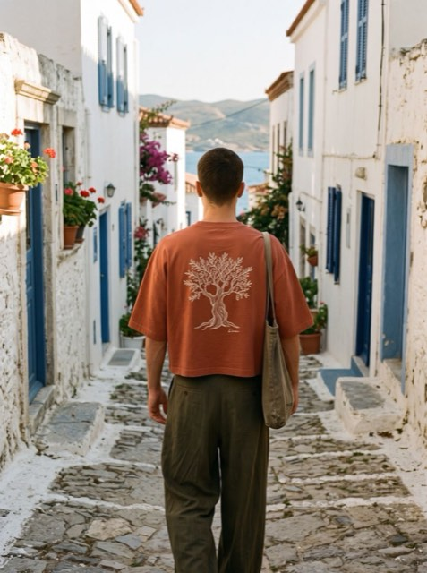

02 / 06FreshaGroup project, team of up to four · Product and app · 6 weeks2026
Fresha
Eat confidently. Waste less.
A handheld scanner that reads spoilage gases and bacteria to show, in seconds, whether food is still safe to eat. A companion app turns every meal saved into CO₂ saved, so cutting waste feels rewarding rather than a chore.
- My role
- Storyboarded the journey and designed three app screens, including the Result screen
- Team
- Group project, up to four
- Duration
- 6 weeks
- Type
- Product and UX design

01Problem and story
Is it still safe to eat?
People throw food away because they can’t tell whether it has gone off, not because it has. Use-by dates are cautious and the sniff test is guesswork. Fresha swaps the guessing for a clear reading, and shows what binning it would have cost the planet.
- ⅓
- of all food produced globally is lost or wasted
- 9.5Mt
- of food wasted in the UK every year
- £14bn
- yearly value of food thrown away by UK households
Sources: FAO (global food loss and waste); WRAP (UK food waste estimates).

02Interface
Three readings, one app.
The device screen answers with colour first, numbers second. The app adds the why: what binning it would cost.

- 48%
- Can’t guarantee it. Use your judgement.
- 97%
- Safe to eat. Points earned.
- 14%
- Highly likely contaminated.
03Companion app
Every meal saved becomes CO₂ saved.
- Home
- One action: scan.
- Result
- Score plus that item’s CO₂ impact.
- Rewards
- CO₂ saved unlocks food or a tree.

04Sketch to form
One hand, one glance.
A one-handed body with a fold-out stand, a clear READY state, and a sensor head that sits close to the food without touching it. The result reads at a glance, so the decision takes a second, not a sniff test.



All work